Sleek music playback, beautifully translucent.
A local music player for Android and macOS, with a glass-inspired interface, powerful audio controls, and offline playback for your music library.
Designed for your local music library.
GlassBeat brings together smart listening tools, responsive controls, and offline playback for every session.
Listen History
Pick up right where you left off with a clear record of your recent tracks and favorite listening moments.
Built-in Tag Editor
Edit track details and keep your music library organized directly inside the app without switching tools.
Equalizer
Fine-tune your sound with custom audio settings that help you match the mood, headphones, or genre you’re listening to.
Sleep Timer
Set playback to stop automatically so your music can fade out while you rest.
Translucent UI
Enjoy a clean glassmorphic UI with adaptive color themes and intuitive playback controls.
Simultaneous Audio Playback
Manage multiple audio streams smoothly and keep your listening experience flexible and uninterrupted.
Your music library, at home on Mac.
GlassBeat for macOS pairs a glassmorphic desktop interface with native CoreAudio playback. Browse local folders, edit embedded tags, and shape your sound with a five-band equalizer.
Plays MP3, FLAC, WAV, M4A/AAC, OGG, and OPUS files. Your library stays on your Mac—GlassBeat does not use cloud accounts or telemetry.
Made for listening on Mac.
Explore the desktop library, player, equalizer, and music management tools.
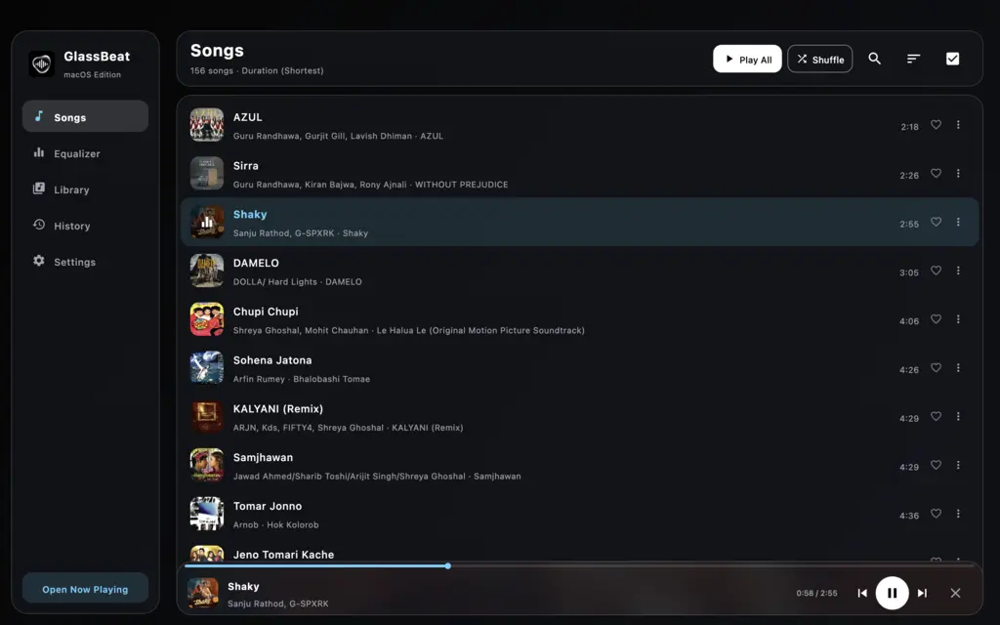
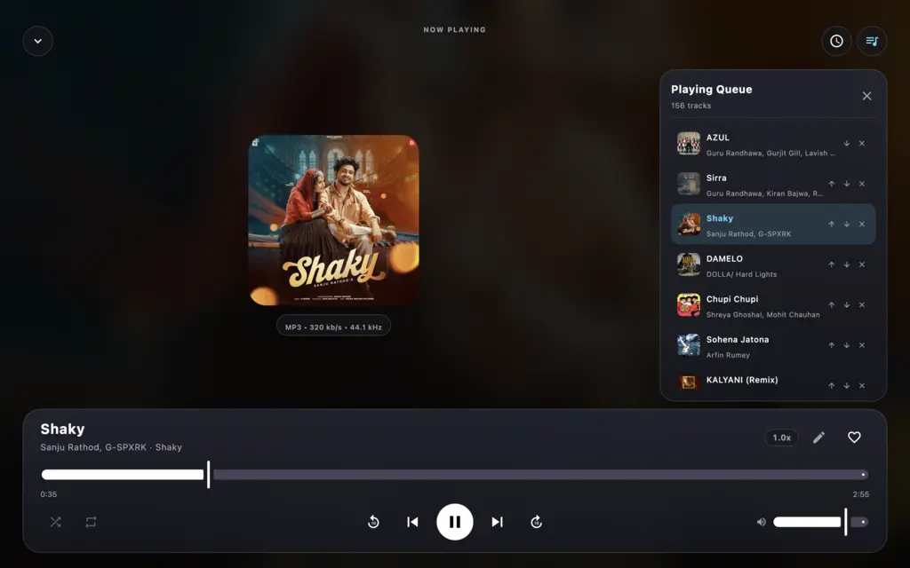
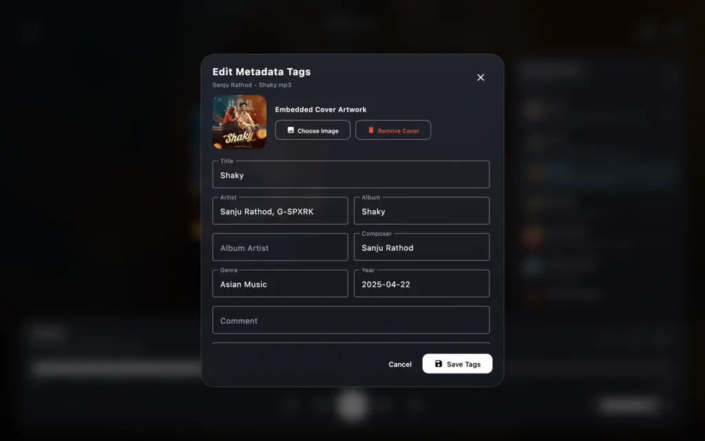
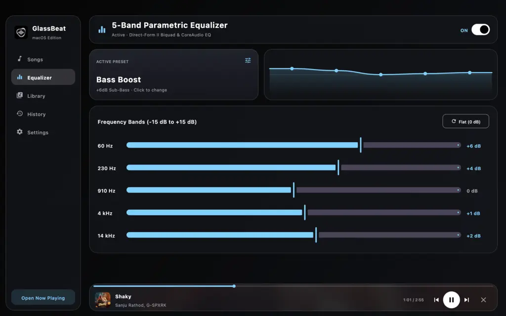
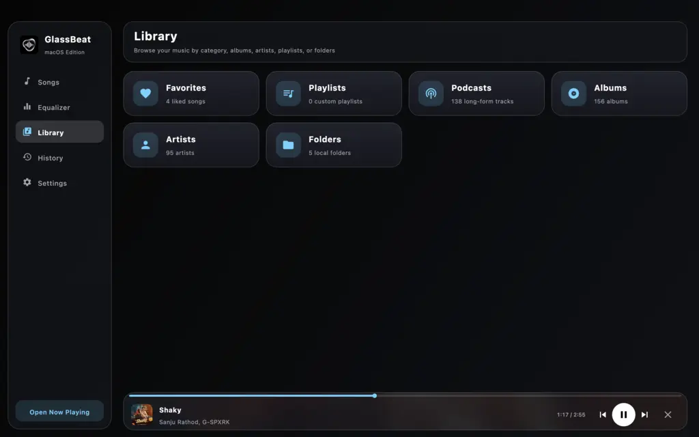
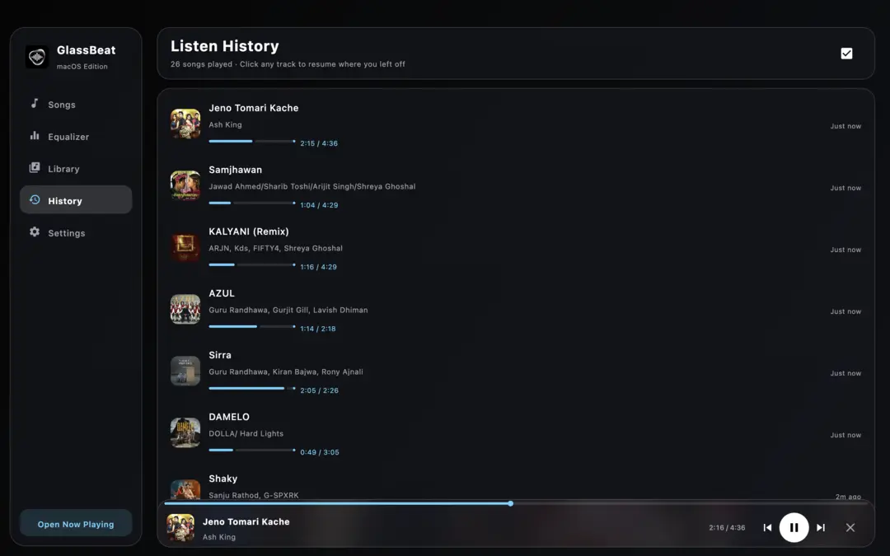
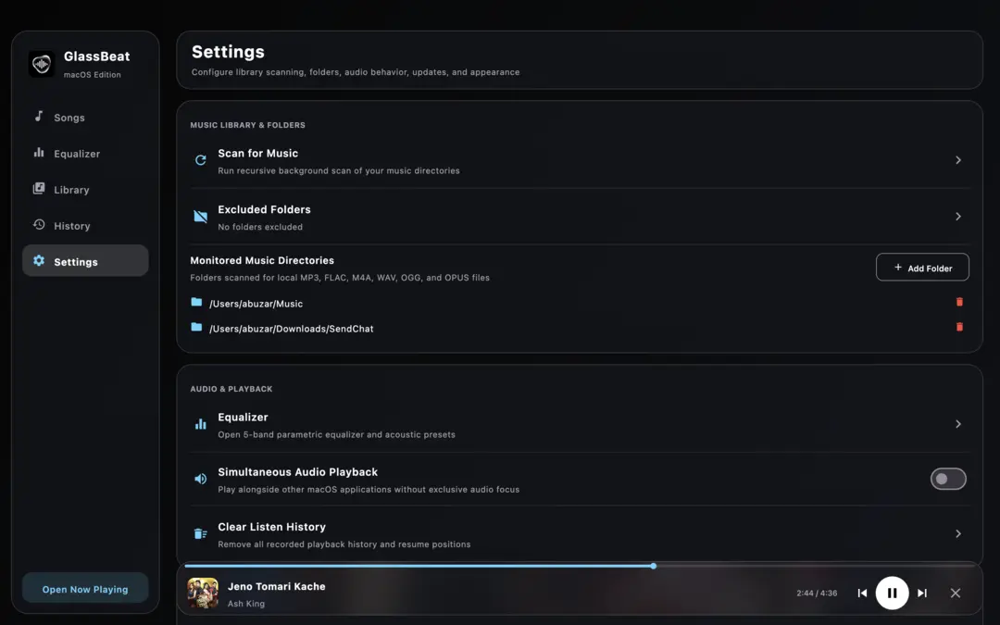
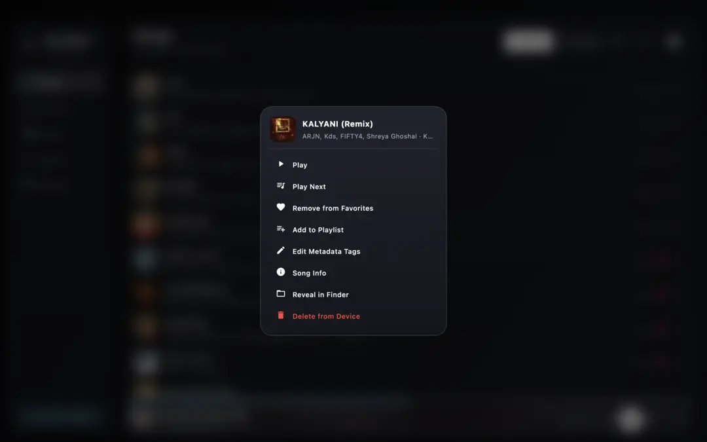
Explore the interface.
Take a glance at GlassBeat's layouts, translucent screens, and music player controls.
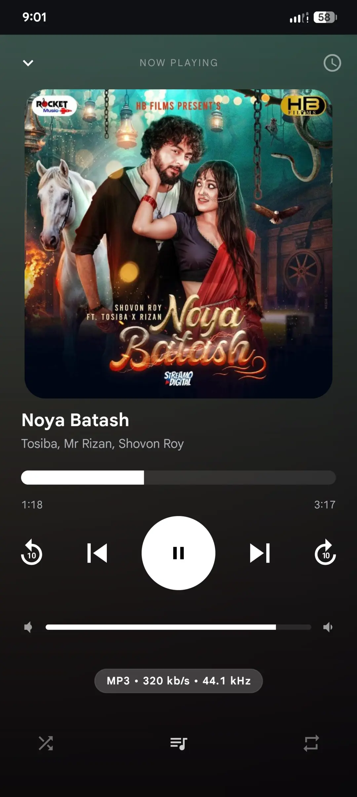
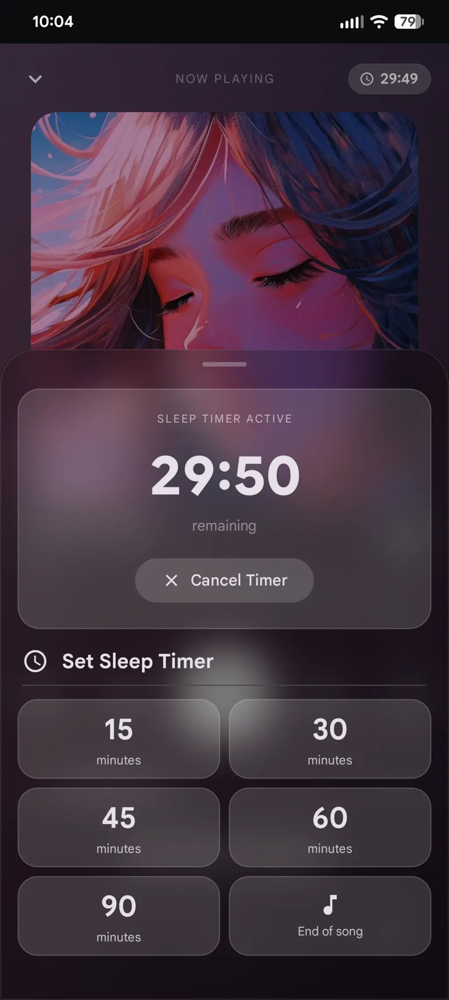
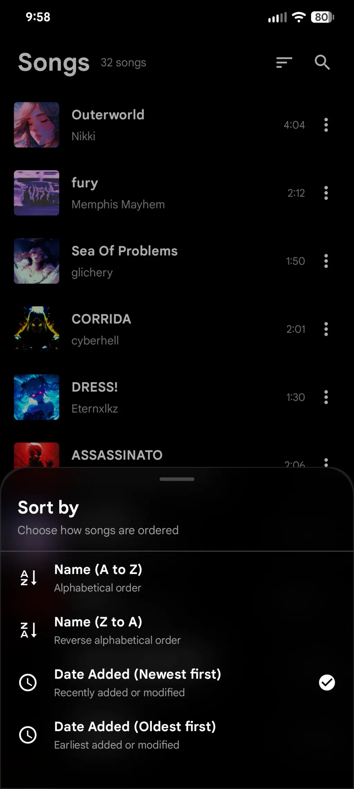
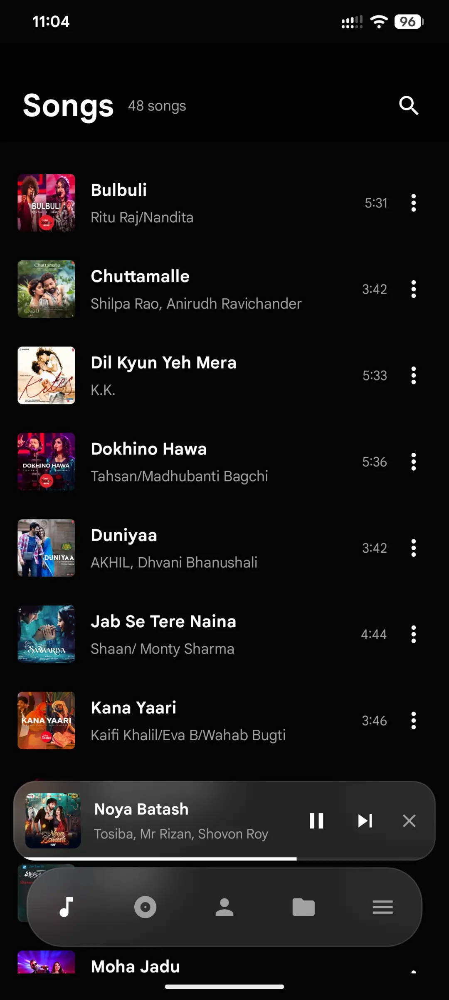
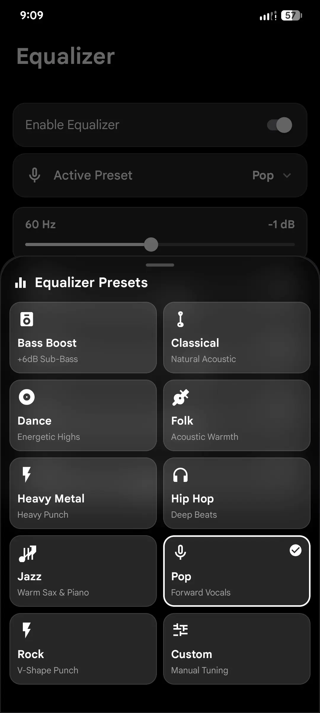
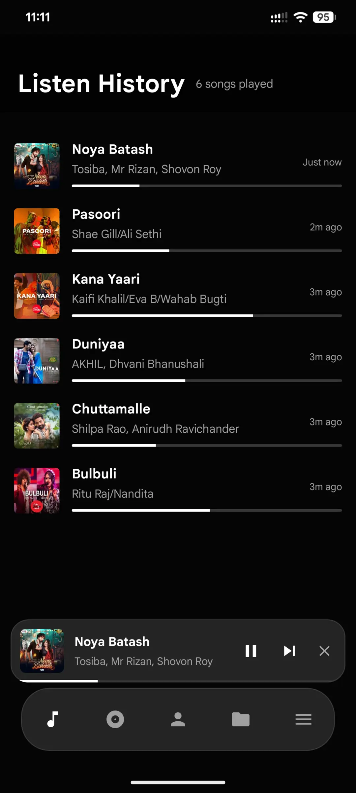
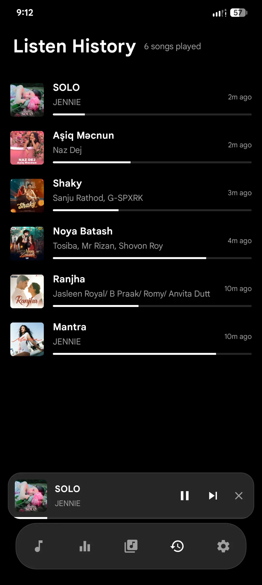
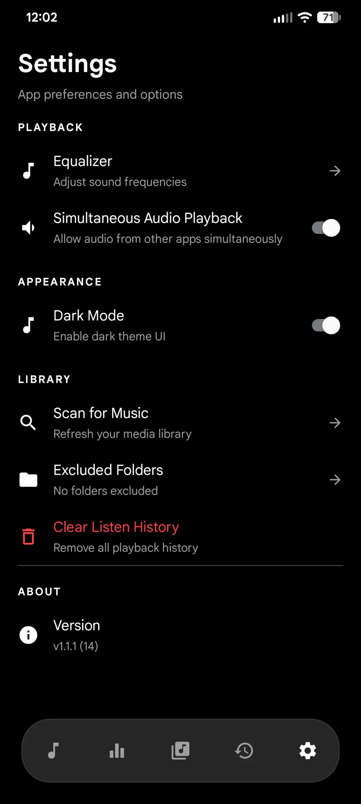
Listen to your local library with GlassBeat.
Get GlassBeat for Android on Google Play or download the macOS edition from GitHub Releases.